Ecuaciones y Factores de Conversión
- Ecuaciones y leyes de circuitos de CC
- Reglas de circuitos en serie
- Reglas de circuitos en paralelo
- Valores equivalentes de componentes en serie y paralelo
- Ecuación de dimensionado de condensadores
- Ecuación de dimensionado de inductores
- Ecuaciones de constante de tiempo
- Valor de la constante de tiempo en circuitos RC y RL en serie
- Cálculo de tensión o corriente a tiempo especificado
- Cálculo del tiempo a tensión o corriente especificada
- Ecuaciones de circuitos de CA
- Reactancia inductiva
- Reactancia capacitiva
- Impedancia en relación a R y X
- Ley de Ohm para CA
- Impedancias en serie y paralelo
- Resonancia
- Potencia de CA
- Decibelios
- Prefijos métricos y conversión de unidades
- Datos
- Colaboradores
Ecuaciones y leyes de circuitos de CC
Leyes de Ohm y Joule
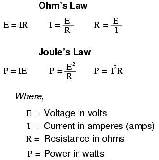
NOTA: el símbolo "V" ("U" en Europa) se utiliza a veces para representar el voltaje en lugar de "E". En algunos casos, un autor o diseñador de circuitos puede optar por utilizar exclusivamente "V" para voltaje, sin utilizar nunca el símbolo "E". Otras veces, los dos símbolos se usan indistintamente, o "E" se usa para representar el voltaje de una fuente de energía, mientras que "V" se usa para representar el voltaje a través de una carga ("caída" de voltaje).
Kirchhoff's Laws
"La suma algebraica de todos los voltajes en un bucle debe ser igual a cero".
Ley de voltaje de Kirchhoff (KVL)
"La suma algebraica de todas las corrientes que entran y salen de un nodo debe ser igual a cero".
Ley actual de Kirchhoff (KCL)
Reglas de circuitos en serie
- Los componentes de un circuito en serie comparten la misma corriente. Itotal = I1 = I2= . . . In
- La resistencia total en un circuito en serie es igual a la suma de las resistencias individuales, por lo quemayor queque cualquiera de las resistencias individuales. Rtotal = R1 + R2+ . . . Rn
- El voltaje total en un circuito en serie es igual a la suma de las caídas de voltaje individuales. mitotal = E1 + E2+ . . . min
Reglas de circuitos en paralelo
- Los componentes de un circuito en paralelo comparten el mismo voltaje. mitotal = E1 = E2= . . . min
- La resistencia total en un circuito paralelo esmenosque cualquiera de las resistencias individuales. Rtotal= 1 / (1/R1+ 1/R2+ . . . 1/Rn)
- La corriente total en un circuito en paralelo es igual a la suma de las corrientes de las ramas individuales. Itotal = I1 + I2+ . . . In
Valores equivalentes de componentes en serie y paralelo
Resistencias en serie y paralelo
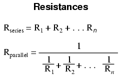
Inductancias en serie y paralelo
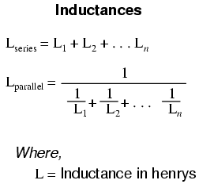
Capacitancias en serie y paralelo
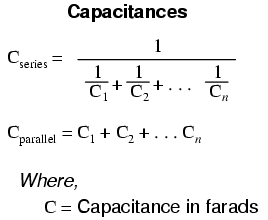
Ecuación de dimensionado de condensadores
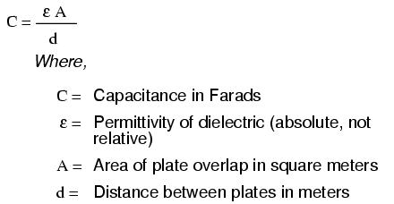
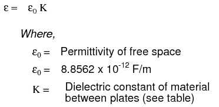
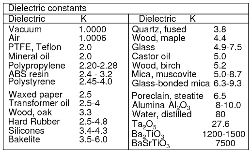
Una fórmula para capacitancia en picofaradios usando dimensiones prácticas:
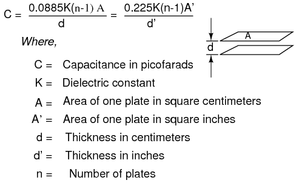
Ecuación de dimensionado de inductores
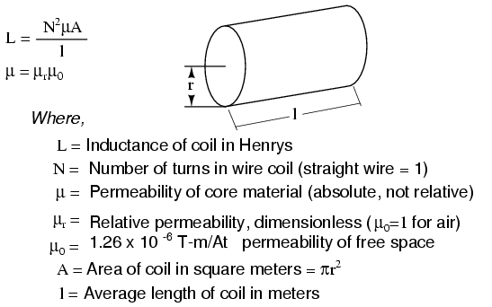
Las fórmulas de Wheeler para la inductancia de bobinas con núcleo de aire que aparecen a continuación son útiles para inductores de radiofrecuencia. La siguiente fórmula para la inductancia de una bobina de solenoide con núcleo de aire de una sola capa tiene una precisión de aproximadamente el 1 % para 2r/l < 3. La fórmula de la bobina gruesa tiene una precisión del 1 % cuando los términos del denominador son aproximadamente iguales. La fórmula en espiral de Wheeler tiene una precisión del 1% para c>0,2r. Si bien se trata de una fórmula de "alambre redondo", aún puede ser aplicable a inductores en espiral de circuitos impresos con una precisión reducida.
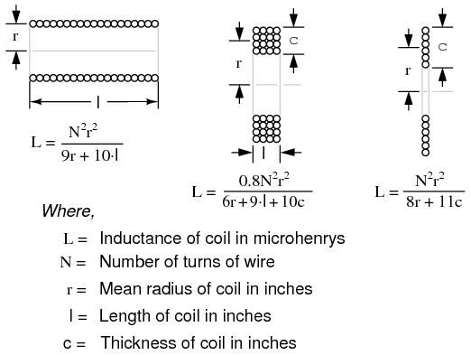
La inductancia en henrios de un inductor de circuito impreso cuadrado viene dada por dos fórmulas donde p=q y p≠q.
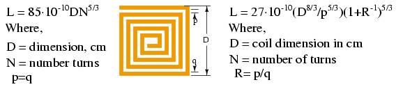
Dimensionado de cable para inductores
La tabla de cables proporciona "vueltas por pulgada" para cables magnéticos esmaltados que se utilizan con las fórmulas de inductancia para bobinas. El área de la sección transversal circular en mil determina la capacidad de carga de corriente de los cables.
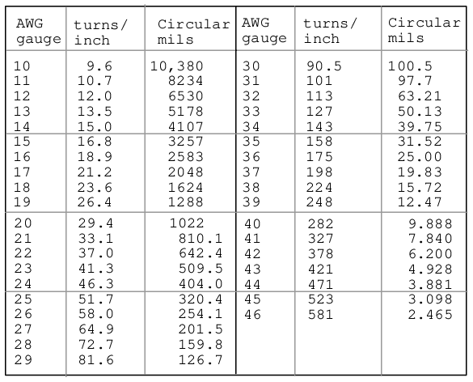
Ecuaciones de constante de tiempo
Valor de la constante de tiempo en circuitos RC y RL en serie
Constante de tiempo en segundos = RC
Constante de tiempo en segundos = L/R
Cálculo de tensión o corriente a tiempo especificado
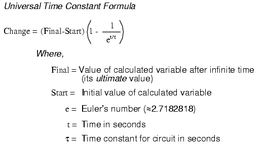
Cálculo del tiempo a tensión o corriente especificada

Ecuaciones de circuitos de CA
Reactancia inductiva
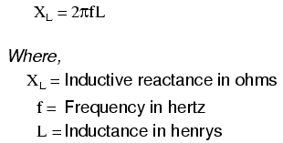
Reactancia capacitiva
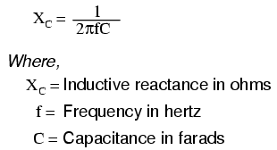
Impedancia en relación a R y X
ZL= R + jXL
ZC= R - jXC
Ley de Ohm para CA
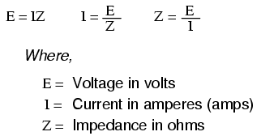
Impedancias en serie y paralelo
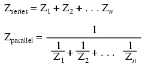
NOTA: Todas las impedancias deben calcularse encomplejoforma numérica para que estas ecuaciones funcionen.
Resonancia
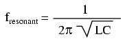
NOTA: Esta ecuación se aplica a un circuito LC no resistivo. En circuitos que contienen resistencia además de inductancia y capacitancia, esta ecuación se aplica sólo a configuraciones en serie y en paralelo donde R es muy pequeño.
Potencia de CA
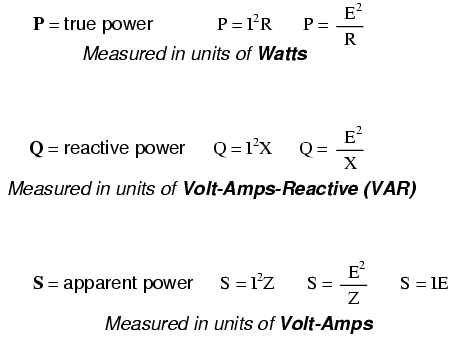
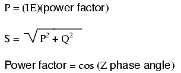
Decibelios
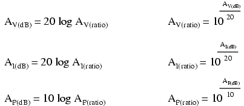
Prefijos métricos y conversión de unidades
- Prefijos métricos
- Yotta = 1024Símbolo: Y
- Zetta = 1021Símbolo: Z
- Exa = 1018Símbolo: E
- Peta = 1015Símbolo: P
- Tera = 1012Símbolo: T
- Giga = 109Símbolo: G
- Mega = 106Símbolo: M
- Kilo = 103Símbolo: k
- Hecto = 102Símbolo: h
- Deca = 101Símbolo: da
- Deci = 10-1Símbolo: d
- Centi = 10-2Símbolo: c
- Milli = 10-3Símbolo: m
- Micro = 10-6Símbolo: µ
- Nano = 10-9Símbolo: norte
- Pico = 10-12Símbolo: p
- Femto = 10-15Símbolo: f
- Atto = 10-18Símbolo: un
- Zepto = 10-21Símbolo: z
- Yocto = 10-24Símbolo: y
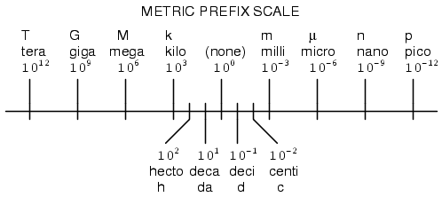
- Factores de conversión para temperatura.
- oF = (oC)(9/5) + 32
- oC = (oF - 32)(5/9)
- oR = oF+459,67
- oK = oC+273,15
Equivalencias de conversión para volumen
1 US gallon (gal) = 231.0 cubic inches (in3) = 4 cuartos (qt) = 8 pintas (pt) = 128 onzas líquidas (fl. oz.) = 3,7854 litros (l)
1 Imperial gallon (gal) = 160 fluid ounces (fl. oz.) = 4.546 liters (l)
Equivalencias de conversión para distancia
1 inch (in) = 2.540000 centimeter (cm)
Equivalencias de conversión para velocidad
1 mile per hour (mi/h) = 88 feet per minute (ft/m) = 1.46667 feet per second (ft/s) = 1.60934 kilometer per hour (km/h) = 0.44704 meter per second (m/s) = 0.868976 knot (knot -- international)
Equivalencias de conversión de peso
1 pound (lb) = 16 ounces (oz) = 0.45359 kilogram (kg)
Equivalencias de conversión para fuerza
1 pound-force (lbf) = 4.44822 newton (N)
Aceleración de la gravedad (caída libre), estándar terrestre
9.806650 meters per second per second (m/s2) = 32.1740 pies por segundo por segundo (pies/s2)
Equivalencias de conversión para área
1 acre = 43560 square feet (ft2) = 4840 yardas cuadradas (yd2) = 4046,86 metros cuadrados (m2)
Equivalencias de conversión para presión
1 pound per square inch (psi) = 2.03603 inches of mercury (in. Hg) = 27.6807 inches of water (in. W.C.) = 6894.757 pascals (Pa) = 0.0680460 atmospheres (Atm) = 0.0689476 bar (bar)
Equivalencias de conversión de energía o trabajo
1 british thermal unit (BTU -- "International Table") = 251.996 calories (cal -- "International Table") = 1055.06 joules (J) = 1055.06 watt-seconds (W-s) = 0.293071 watt-hour (W-hr) = 1.05506 x 1010ergios (ergio) = 778,169 pie-libra-fuerza (ft-lbf)
Equivalencias de conversión de potencia
1 horsepower (hp -- 550 ft-lbf/s) = 745.7 watts (W) = 2544.43 british thermal units per hour (BTU/hr) = 0.0760181 boiler horsepower (hp -- boiler)
Equivalencias de conversión del par motor
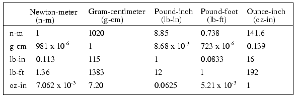
Ubique la fila correspondiente a la unidad de torsión conocida a lo largo de la izquierda de la tabla. Multiplique por el factor debajo de la columna para obtener las unidades deseadas. Por ejemplo, para convertir 2 oz-in de torque a n-m, ubique la fila de oz-in en la tabla de la izquierda. Localice 7.062 x 10-3en la intersección de la columna de unidades n-m deseadas. Multiplica 2 oz-pulg x (7,062 x 10-3) = 14,12 x 10-3Nuevo Méjico.
Convertir entre unidades es fácil si tienes un conjunto de equivalencias con las que trabajar. Supongamos que quisiéramos convertir una cantidad de energía de 2500 calorías en vatios-hora. Lo que necesitaríamos hacer es encontrar un conjunto de cifras equivalentes para esas unidades. En nuestra referencia aquí, vemos que 251,996 calorías equivalen físicamente a 0,293071 vatios hora. Para convertir calorías a vatios-hora, debemos formar una "fracción unitaria" con estas cifras físicamente iguales (una fracción compuesta de diferentes cifras y diferentes unidades, siendo el numerador y el denominadorfísicamenteiguales entre sí), colocando la unidad deseada en el numerador y la unidad inicial en el denominador, y luego multiplicamos nuestro valor inicial de calorías por esa fracción.
Dado que ambos términos de la "fracción unitaria" son físicamente iguales entre sí, la fracción en su conjunto tiene unafísicovalor de 1, por lo que no cambia el valor verdadero de ninguna cifra cuando se multiplica por ella. Sin embargo, cuando se cancelen unidades, habrá un cambio de unidades. Por ejemplo, 2500 calorías multiplicadas por la fracción unitaria de (0,293071 w-hr / 251,996 cal) = 2,9075 vatios-hora.
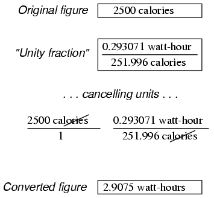
El enfoque de la "fracción unitaria" para la conversión de unidades puede extenderse más allá de pasos individuales. Supongamos que queremos convertir una medida de flujo de fluido de 175 galones por hora en litros por día. Tenemos dos unidades para convertir aquí: galones a litros y horas a días. Recuerde que la palabra "por" en matemáticas significa "dividido por", por lo que nuestra cifra inicial de 175 galonesperhora significa 175 galones divididos por horas. Expresando nuestra cifra original como tal fracción, la multiplicamos por las fracciones unitarias necesarias para convertir galones a litros (3,7854 litros = 1 galón) y horas a días (1 día = 24 horas). Las unidades deben estar dispuestas en la fracción unitaria de tal manera que las unidades no deseadas se cancelen entre sí por encima y por debajo de las barras de fracción. Para este problema, significa usar una fracción unitaria de galones a litros de (3,7854 litros / 1 galón) y una fracción unitaria de horas a días de (24 horas / 1 día):
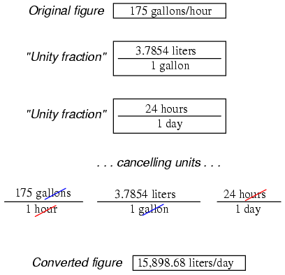
Nuestra respuesta final (convertida) es 15898,68 litros por día.
Datos
Los factores de conversión se encontraron en los 78thedición de laManual CRC de química y física, y los 3rdedición de Bela LiptakManual de ingenieros de instrumentos: medición y análisis de procesos.
Colaboradores
Los contribuyentes a este capítulo se enumeran en orden cronológico de sus contribuciones, desde el más reciente hasta el primero. Consulte el Apéndice 2 (Lista de colaboradores) para fechas e información de contacto.
Gerardo Gardner(Enero de 2003): Adición de la conversión de galones imperiales.
Lecciones en circuitos eléctricoscopyright (C) 2000-2023 Tony R. Kuphaldt, según los términos y condiciones delCC BY License.